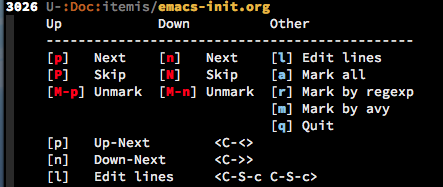

Hydras with keybinding hints of functions used
I'll never manage to remember all functions of all modes I use. Remembering their keybindings is even worse. What I usually remember is that there is a function that does exactly what I have in mind.
To help me make use of these functions I tend to use hydras. I have one hydra that allows me to navigate to all hydras I have (bound to <f1> in the global key map).
(bind-key "<f1>" 'hydra-allhydras/body)
For functions that are bound to certain modes I usually have mode specific hydras that are mapped to <f1> within the respective mode (e.g. org agenda).
(bind-key "<f1>" 'hydra-org-agenda-view/body org-agenda-mode-map)
Once I found the function (and used it successfully) I usually wonder by what keybinding this function can be reached.
Lazy as I am I usually do not try to find that keybinding since it takes a couple of keystrokes too much.
Now I found a way that allows me to show the keybinding of functions I use in hydras. Giving credit where it belongs: I make use of 'substitute-command-keys' and several dash functions. Everything else is just glue code. Since I am an elisp newbie I'm always interested in feedback to make code more idiomatic.
(defun keys-for-function (fun-symbol) "find a key binding for the given function always returns a string (can be empty)" (let ((result (substitute-command-keys (concat "\\[" (symbol-name fun-symbol) "]")))) (if (equal (substring result 0 (min (length result) 3)) "M-x") "" result))) (defun hydra-combine-functions-w-key-bindings (pairs) "return a string that can be put into hydra menu pairs must be a list of tuple of the form ( string . function ) if a personal keybinding exists the string is concatenated with the keybinding of the respective function. if no keybining exists that pair is ignored for the rest of the function. all pairs found relevant are combined with line breaks in between. example call: (hydra-combine-functions-w-key-bindings '(( \"some \" . function ) ( \"other\" . mc/mark-previous-like-this )))" (--reduce (if (eq it nil) "" (format "%s %s" acc it)) (-non-nil (--map (let ((kb (keys-for-function (cdr it)))) (if (string-empty-p kb) nil (concat (car it) " <" kb ">"))) pairs))))
Using these functions I can now add all keybindings which can be used within the current active key map. To achieve this, I use the possibility to add arbitrary function execution into the hydra menu strings through '%s'.
(defhydra hydra-multiple-cursors (:hint nil) " ^Up^ ^Down^ ^Other^ ---------------------------------------------- [_p_] Next [_n_] Next [_l_] Edit lines [_P_] Skip [_N_] Skip [_a_] Mark all [_M-p_] Unmark [_M-n_] Unmark [_r_] Mark by regexp ^ ^ ^ ^ [_m_] Mark by avy ^ ^ ^ ^ [_q_] Quit %s(hydra-combine-functions-w-key-bindings '((\" [p] Up-Next \" . mc/mark-previous-like-this) (\" [P] Up-Skip \" . mc/skip-to-previous-like-this) (\" [M-p] Up-Unmark \" . mc/unmark-previous-like-this) (\" [n] Down-Next \" . mc/mark-next-like-this) (\" [N] Down-Skip \" . mc/skip-to-next-like-this) (\" [M-n] Down-Unmark \" . mc/unmark-next-like-this) (\" [l] Edit lines \" . mc/edit-lines) (\" [a] Mark all \" . mc/mark-all-like-this) (\" [r] Mark by regexp\" . mc/mark-all-in-region-regexp) (\" [m] Mark by avy \" . ace-mc-add-multiple-cursors))) " ("l" mc/edit-lines :exit t) ("a" mc/mark-all-like-this :exit t) ("n" mc/mark-next-like-this) ("N" mc/skip-to-next-like-this) ("M-n" mc/unmark-next-like-this) ("p" mc/mark-previous-like-this) ("P" mc/skip-to-previous-like-this) ("M-p" mc/unmark-previous-like-this) ("r" mc/mark-all-in-region-regexp :exit t) ("m" ace-mc-add-multiple-cursors :exit t) ("q" nil))
Using this hydra I get the following window:

It automatically brings up all commands that do have mapped key bindings.